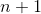
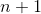

3.4 数据类型
ECMAScript有6种简单数据类型（也称为原始类型）：Undefined、Null、Boolean、Number、String和Symbol。Symbol（符号）是ECMAScript 6新增的。还有一种复杂数据类型叫Object（对象）。Object是一种无序名值对的集合。因为在ECMAScript中不能定义自己的数据类型，所有值都可以用上述7种数据类型之一来表示。只有7种数据类型似乎不足以表示全部数据。但ECMAScript的数据类型很灵活，一种数据类型可以当作多种数据类型来使用。
3.4.1
typeof操作符
因为ECMAScript的类型系统是松散的，所以需要一种手段来确定任意变量的数据类型。typeof操作符就是为此而生的。对一个值使用typeof操作符会返回下列字符串之一：
-
"undefined"表示值未定义； -
"boolean"表示值为布尔值； -
"string"表示值为字符串； -
"number"表示值为数值； -
"object"表示值为对象（而不是函数）或null； -
"function"表示值为函数； -
"symbol"表示值为符号。
下面是使用typeof操作符的例子：
let message = "some string";
console.log(typeof message); // "string"
console.log(typeof(message)); // "string"
console.log(typeof 95); // "number"在这个例子中，我们把一个变量（message）和一个数值字面量传给了typeof操作符。注意，因为typeof是一个操作符而不是函数，所以不需要参数（但可以使用参数）。
注意typeof在某些情况下返回的结果可能会让人费解，但技术上讲还是正确的。比如，调用typeof null返回的是"object"。这是因为特殊值null被认为是一个对空对象的引用。
注意 严格来讲，函数在ECMAScript中被认为是对象，并不代表一种数据类型。可是，函数也有自己特殊的属性。为此，就有必要通过
typeof操作符来区分函数和其他对象。
3.4.2
Undefined类型
Undefined类型只有一个值，就是特殊值undefined。当使用var或let声明了变量但没有初始化时，就相当于给变量赋予了undefined值：
let message;
console.log(message == undefined); // true在这个例子中，变量message在声明的时候并未初始化。而在比较它和undefined的字面值时，两者是相等的。这个例子等同于如下示例：
let message = undefined;
console.log(message == undefined); // true这里，变量message显式地以undefined来初始化。但这是不必要的，因为默认情况下，任何未经初始化的变量都会取得undefined值。
注意 一般来说，永远不用显式地给某个变量设置
undefined值。字面值undefined主要用于比较，而且在ECMA-262第3版之前是不存在的。增加这个特殊值的目的就是为了正式明确空对象指针（null）和未初始化变量的区别。
注意，包含undefined值的变量跟未定义变量是有区别的。请看下面的例子：
let message; // 这个变量被声明了，只是值为undefined
// 确保没有声明过这个变量
// let age
console.log(message); // "undefined"
console.log(age); // 报错在上面的例子中，第一个console.log会指出变量message的值，即"undefined"。而第二个console.log要输出一个未声明的变量age的值，因此会导致报错。对未声明的变量，只能执行一个有用的操作，就是对它调用typeof。（对未声明的变量调用delete也不会报错，但这个操作没什么用，实际上在严格模式下会抛出错误。）
在对未初始化的变量调用typeof时，返回的结果是"undefined"，但对未声明的变量调用它时，返回的结果还是"undefined"，这就有点让人看不懂了。比如下面的例子：
let message; // 这个变量被声明了，只是值为undefined
// 确保没有声明过这个变量
// let age
console.log(typeof message); // "undefined"
console.log(typeof age); // "undefined"无论是声明还是未声明，typeof返回的都是字符串"undefined"。逻辑上讲这是对的，因为虽然严格来讲这两个变量存在根本性差异，但它们都无法执行实际操作。
注意 即使未初始化的变量会被自动赋予
undefined值，但我们仍然建议在声明变量的同时进行初始化。这样，当typeof返回"undefined"时，你就会知道那是因为给定的变量尚未声明，而不是声明了但未初始化。
undefined是一个假值。因此，如果需要，可以用更简洁的方式检测它。不过要记住，也有很多其他可能的值同样是假值。所以一定要明确自己想检测的就是undefined这个字面值，而不仅仅是假值。
let message; // 这个变量被声明了，只是值为undefined
// age没有声明
if (message) {
// 这个块不会执行
}
if (!message) {
// 这个块会执行
}
if (age) {
// 这里会报错
}3.4.3
Null类型
Null类型同样只有一个值，即特殊值null。逻辑上讲，null值表示一个空对象指针，这也是给typeof传一个null会返回"object"的原因：
let car = null;
console.log(typeof car); // "object"在定义将来要保存对象值的变量时，建议使用null来初始化，不要使用其他值。这样，只要检查这个变量的值是不是null就可以知道这个变量是否在后来被重新赋予了一个对象的引用，比如：
if (car != null) {
// car是一个对象的引用
}
undefined值是由null值派生而来的，因此ECMA-262将它们定义为表面上相等，如下面的例子所示：
console.log(null == undefined); // true用等于操作符（==）比较null和undefined始终返回true。但要注意，这个操作符会为了比较而转换它的操作数（本章后面将详细介绍）。
即使null和undefined有关系，它们的用途也是完全不一样的。如前所述，永远不必显式地将变量值设置为undefined。但null不是这样的。任何时候，只要变量要保存对象，而当时又没有那个对象可保存，就要用null来填充该变量。这样就可以保持null是空对象指针的语义，并进一步将其与undefined区分开来。
null是一个假值。因此，如果需要，可以用更简洁的方式检测它。不过要记住，也有很多其他可能的值同样是假值。所以一定要明确自己想检测的就是null这个字面值，而不仅仅是假值。
let message = null;
let age;
if (message) {
// 这个块不会执行
}
if (!message) {
// 这个块会执行
}
if (age) {
// 这个块不会执行
}
if (!age) {
// 这个块会执行
}3.4.4
Boolean类型
Boolean（布尔值）类型是ECMAScript中使用最频繁的类型之一，有两个字面值：true和false。这两个布尔值不同于数值，因此true不等于1，false不等于0。下面是给变量赋布尔值的例子：
let found = true;
let lost = false;注意，布尔值字面量true和false是区分大小写的，因此True和False（及其他大小混写形式）是有效的标识符，但不是布尔值。
虽然布尔值只有两个，但所有其他ECMAScript类型的值都有相应布尔值的等价形式。要将一个其他类型的值转换为布尔值，可以调用特定的Boolean()转型函数：
let message = "hello world!";
let messageasboolean = boolean(message);在这个例子中，字符串message会被转换为布尔值并保存在变量messageAsBoolean中。Boolean()转型函数可以在任意类型的数据上调用，而且始终返回一个布尔值。什么值能转换为true或false的规则取决于数据类型和实际的值。下表总结了不同类型与布尔值之间的转换规则。
|
数据类型 |
转换为 |
转换为 |
|---|---|---|
|
|
|
|
|
|
非空字符串 |
|
|
|
非零数值（包括无穷值） |
|
|
|
任意对象 |
|
|
|
|
|
理解以上转换非常重要，因为像if等流控制语句会自动执行其他类型值到布尔值的转换，例如：
let message = "hello world!";
if (message) {
console.log("value is true");
}在这个例子中，console.log会输出字符串"Value is true"，因为字符串message会被自动转换为等价的布尔值true。由于存在这种自动转换，理解流控制语句中使用的是什么变量就非常重要。错误地使用对象而不是布尔值会明显改变应用程序的执行流。
3.4.5
Number类型
ECMAScript中最有意思的数据类型或许就是Number了。Number类型使用IEEE 754格式表示整数和浮点值（在某些语言中也叫双精度值）。不同的数值类型相应地也有不同的数值字面量格式。
最基本的数值字面量格式是十进制整数，直接写出来即可：
let intnum = 55; // 整数整数也可以用八进制（以8为基数）或十六进制（以16为基数）字面量表示。对于八进制字面量，第一个数字必须是零（0），然后是相应的八进制数字（数值0~7）。如果字面量中包含的数字超出了应有的范围，就会忽略前缀的零，后面的数字序列会被当成十进制数，如下所示：
let octalnum1 = 070; // 八进制的56
let octalnum2 = 079; // 无效的八进制值，当成79处理
let octalnum3 = 08; // 无效的八进制值，当成8处理八进制字面量在严格模式下是无效的，会导致JavaScript引擎抛出语法错误。1
1ECMAScript 2015或ES6中的八进制值通过前缀0o来表示；严格模式下，前缀0会被视为语法错误，如果要表示八进制值，应该使用前缀0o。——译者注
要创建十六进制字面量，必须让真正的数值前缀0x（区分大小写），然后是十六进制数字（0~9以及A~F）。十六进制数字中的字母大小写均可。下面是几个例子：
let hexnum1 = 0xa; // 十六进制10
let hexnum2 = 0x1f; // 十六进制31使用八进制和十六进制格式创建的数值在所有数学操作中都被视为十进制数值。
注意 由于JavaScript保存数值的方式，实际中可能存在正零（+0）和负零（-0）。正零和负零在所有情况下都被认为是等同的，这里特地说明一下。
-
浮点值
要定义浮点值，数值中必须包含小数点，而且小数点后面必须至少有一个数字。虽然小数点前面不是必须有整数，但推荐加上。下面是几个例子：
let floatnum1 = 1.1; let floatnum2 = 0.1; let floatnum3 = .1; // 有效，但不推荐因为存储浮点值使用的内存空间是存储整数值的两倍，所以ECMAScript总是想方设法把值转换为整数。在小数点后面没有数字的情况下，数值就会变成整数。类似地，如果数值本身就是整数，只是小数点后面跟着0（如1.0），那它也会被转换为整数，如下例所示：
let floatnum1 = 1.; // 小数点后面没有数字，当成整数1处理 let floatnum2 = 10.0; // 小数点后面是零，当成整数10处理对于非常大或非常小的数值，浮点值可以用科学记数法来表示。科学记数法用于表示一个应该乘以10的给定次幂的数值。ECMAScript中科学记数法的格式要求是一个数值（整数或浮点数）后跟一个大写或小写的字母e，再加上一个要乘的10的多少次幂。比如：
let floatnum = 3.125e7; // 等于31250000在这个例子中，
floatNum等于31 250 000，只不过科学记数法显得更简洁。这种表示法实际上相当于说：“以3.125作为系数，乘以10的7次幂。”科学记数法也可以用于表示非常小的数值，例如0.000 000 000 000 000 03。这个数值用科学记数法可以表示为3e-17。默认情况下，ECMAScript会将小数点后至少包含6个零的浮点值转换为科学记数法（例如，0.000 000 3会被转换为3e-7）。
浮点值的精确度最高可达17位小数，但在算术计算中远不如整数精确。例如，0.1加0.2得到的不是0.3，而是0.300 000 000 000 000 04。由于这种微小的舍入错误，导致很难测试特定的浮点值。比如下面的例子：
if (a + b == 0.3) { // 别这么干！ console.log("you got 0.3."); }这里检测两个数值之和是否等于0.3。如果两个数值分别是0.05和0.25，或者0.15和0.15，那没问题。但如果是0.1和0.2，如前所述，测试将失败。因此永远不要测试某个特定的浮点值。
注意 之所以存在这种舍入错误，是因为使用了IEEE 754数值，这种错误并非ECMAScript所独有。其他使用相同格式的语言也有这个问题。
-
值的范围
由于内存的限制，ECMAScript并不支持表示这个世界上的所有数值。ECMAScript可以表示的最小数值保存在
Number.MIN_VALUE中，这个值在多数浏览器中是5e-324；可以表示的最大数值保存在Number.MAX_VALUE中，这个值在多数浏览器中是1.797 693 134 862 315 7e+308。如果某个计算得到的数值结果超出了JavaScript可以表示的范围，那么这个数值会被自动转换为一个特殊的Infinity（无穷）值。任何无法表示的负数以-Infinity（负无穷大）表示，任何无法表示的正数以Infinity（正无穷大）表示。如果计算返回正
Infinity或负Infinity，则该值将不能再进一步用于任何计算。这是因为Infinity没有可用于计算的数值表示形式。要确定一个值是不是有限大（即介于JavaScript能表示的最小值和最大值之间），可以使用isFinite()函数，如下所示：let result = number.max_value + number.max_value; console.log(isfinite(result)); // false虽然超出有限数值范围的计算并不多见，但总归还是有可能的。因此在计算非常大或非常小的数值时，有必要监测一下计算结果是否超出范围。
注意 使用
Number.NEGATIVE_INFINITY和Number.POSITIVE_INFINITY也可以获取正、负Infinity。没错，这两个属性包含的值分别就是-Infinity和Infinity。 -
NaN有一个特殊的数值叫
NaN，意思是“不是数值”（Not a Number），用于表示本来要返回数值的操作失败了（而不是抛出错误）。比如，用0除任意数值在其他语言中通常都会导致错误，从而中止代码执行。但在ECMAScript中，0、+0或-0相除会返回NaN：console.log(0/0); // nan console.log(-0/+0); // nan如果分子是非0值，分母是有符号0或无符号0，则会返回
Infinity或-Infinity：console.log(5/0); // infinity console.log(5/-0); // -infinityNaN有几个独特的属性。首先，任何涉及NaN的操作始终返回NaN（如NaN/10），在连续多步计算时这可能是个问题。其次，NaN不等于包括NaN在内的任何值。例如，下面的比较操作会返回false：console.log(nan == nan); // false为此，ECMAScript提供了
isNaN()函数。该函数接收一个参数，可以是任意数据类型，然后判断这个参数是否“不是数值”。把一个值传给isNaN()后，该函数会尝试把它转换为数值。某些非数值的值可以直接转换成数值，如字符串"10"或布尔值。任何不能转换为数值的值都会导致这个函数返回true。举例如下：console.log(isnan(nan)); // true console.log(isnan(10)); // false，10是数值 console.log(isnan("10")); // false，可以转换为数值10 console.log(isnan("blue")); // true，不可以转换为数值 console.log(isnan(true)); // false，可以转换为数值1上述的例子测试了5个不同的值。首先测试的是
NaN本身，显然会返回true。接着测试了数值10和字符串"10"，都返回false，因为它们的数值都是10。字符串"blue"不能转换为数值，因此函数返回true。布尔值true可以转换为数值1，因此返回false。注意 虽然不常见，但
isNaN()可以用于测试对象。此时，首先会调用对象的valueOf()方法，然后再确定返回的值是否可以转换为数值。如果不能，再调用toString()方法，并测试其返回值。这通常是ECMAScript内置函数和操作符的工作方式，本章后面会讨论。 -
数值转换
有3个函数可以将非数值转换为数值：
Number()、parseInt()和parseFloat()。Number()是转型函数，可用于任何数据类型。后两个函数主要用于将字符串转换为数值。对于同样的参数，这3个函数执行的操作也不同。Number()函数基于如下规则执行转换。- 布尔值，
true转换为1，false转换为0。 - 数值，直接返回。
-
null，返回0。 -
undefined，返回NaN。 - 字符串，应用以下规则。
- 如果字符串包含数值字符，包括数值字符前面带加、减号的情况，则转换为一个十进制数值。因此，
Number("1")返回1，Number("123")返回123，Number("011")返回11（忽略前面的零）。 - 如果字符串包含有效的浮点值格式如
"1.1"，则会转换为相应的浮点值（同样，忽略前面的零）。 - 如果字符串包含有效的十六进制格式如
"0xf"，则会转换为与该十六进制值对应的十进制整数值。 - 如果是空字符串（不包含字符），则返回0。
- 如果字符串包含除上述情况之外的其他字符，则返回
NaN。
- 如果字符串包含数值字符，包括数值字符前面带加、减号的情况，则转换为一个十进制数值。因此，
- 对象，调用
valueOf()方法，并按照上述规则转换返回的值。如果转换结果是NaN，则调用toString()方法，再按照转换字符串的规则转换。
从不同数据类型到数值的转换有时候会比较复杂，看一看
Number()的转换规则就知道了。下面是几个具体的例子：let num1 = number("hello world!"); // nan let num2 = number(""); // 0 let num3 = number("000011"); // 11 let num4 = number(true); // 1可以看到，字符串
"Hello world"转换之后是NaN，因为它找不到对应的数值。空字符串转换后是0。字符串000011转换后是11，因为前面的零被忽略了。最后，true转换为1。注意 本章后面会讨论到的一元加操作符与
Number()函数遵循相同的转换规则。考虑到用
Number()函数转换字符串时相对复杂且有点反常规，通常在需要得到整数时可以优先使用parseInt()函数。parseInt()函数更专注于字符串是否包含数值模式。字符串最前面的空格会被忽略，从第一个非空格字符开始转换。如果第一个字符不是数值字符、加号或减号，parseInt()立即返回NaN。这意味着空字符串也会返回NaN（这一点跟Number()不一样，它返回0）。如果第一个字符是数值字符、加号或减号，则继续依次检测每个字符，直到字符串末尾，或碰到非数值字符。比如，"1234blue"会被转换为1234，因为"blue"会被完全忽略。类似地，"22.5"会被转换为22，因为小数点不是有效的整数字符。假设字符串中的第一个字符是数值字符，
parseInt()函数也能识别不同的整数格式（十进制、八进制、十六进制）。换句话说，如果字符串以"0x"开头，就会被解释为十六进制整数。如果字符串以"0"开头，且紧跟着数值字符，在非严格模式下会被某些实现解释为八进制整数。下面几个转换示例有助于理解上述规则：
let num1 = parseint("1234blue"); // 1234 let num2 = parseint(""); // nan let num3 = parseint("0xa"); // 10，解释为十六进制整数 let num4 = parseint(22.5); // 22 let num5 = parseint("70"); // 70，解释为十进制值 let num6 = parseint("0xf"); // 15，解释为十六进制整数不同的数值格式很容易混淆，因此
parseInt()也接收第二个参数，用于指定底数（进制数）。如果知道要解析的值是十六进制，那么可以传入16作为第二个参数，以便正确解析：let num = parseint("0xaf", 16); // 175事实上，如果提供了十六进制参数，那么字符串前面的
"0x"可以省掉：let num1 = parseint("af", 16); // 175 let num2 = parseint("af"); // nan在这个例子中，第一个转换是正确的，而第二个转换失败了。区别在于第一次传入了进制数作为参数，告诉
parseInt()要解析的是一个十六进制字符串。而第二个转换检测到第一个字符就是非数值字符，随即自动停止并返回NaN。通过第二个参数，可以极大扩展转换后获得的结果类型。比如：
let num1 = parseint("10", 2); // 2，按二进制解析 let num2 = parseint("10", 8); // 8，按八进制解析 let num3 = parseint("10", 10); // 10，按十进制解析 let num4 = parseint("10", 16); // 16，按十六进制解析因为不传底数参数相当于让
parseInt()自己决定如何解析，所以为避免解析出错，建议始终传给它第二个参数。注意 多数情况下解析的应该都是十进制数，此时第二个参数就要传入10。
parseFloat()函数的工作方式跟parseInt()函数类似，都是从位置0开始检测每个字符。同样，它也是解析到字符串末尾或者解析到一个无效的浮点数值字符为止。这意味着第一次出现的小数点是有效的，但第二次出现的小数点就无效了，此时字符串的剩余字符都会被忽略。因此，"22.34.5"将转换成22.34。parseFloat()函数的另一个不同之处在于，它始终忽略字符串开头的零。这个函数能识别前面讨论的所有浮点格式，以及十进制格式（开头的零始终被忽略）。十六进制数值始终会返回0。因为parseFloat()只解析十进制值，因此不能指定底数。最后，如果字符串表示整数（没有小数点或者小数点后面只有一个零），则parseFloat()返回整数。下面是几个示例：let num1 = parsefloat("1234blue"); // 1234，按整数解析 let num2 = parsefloat("0xa"); // 0 let num3 = parsefloat("22.5"); // 22.5 let num4 = parsefloat("22.34.5"); // 22.34 let num5 = parsefloat("0908.5"); // 908.5 let num6 = parsefloat("3.125e7"); // 31250000 - 布尔值，
3.4.6
String类型
String（字符串）数据类型表示零或多个16位Unicode字符序列。字符串可以使用双引号（"）、单引号（'）或反引号（`）标示，因此下面的代码都是合法的：
let firstname = "john";
let lastname = 'jacob';
let lastname = `jingleheimerschmidt`跟某些语言中使用不同的引号会改变对字符串的解释方式不同，ECMAScript语法中表示字符串的引号没有区别。不过要注意的是，以某种引号作为字符串开头，必须仍然以该种引号作为字符串结尾。比如，下面的写法会导致语法错误：
let firstname = 'nicholas"; // 语法错误：开头和结尾的引号必须是同一种字符字面量
字符串数据类型包含一些字符字面量，用于表示非打印字符或有其他用途的字符，如下表所示：
字面量 含义 \n换行 \t制表 \b退格 \r回车 \f换页 \\反斜杠（ \）\'单引号（ '），在字符串以单引号标示时使用，例如'he said, \'hey.\''\"双引号（ "），在字符串以双引号标示时使用，例如"he said, \"hey.\""\`反引号（ \`），在字符串以反引号标示时使用，例如`he said, \`hey.\``\xnn以十六进制编码 nn表示的字符（其中n是十六进制数字0~f），例如\x41等于"a"\unnnn以十六进制编码 nnnn表示的unicode字符（其中n是十六进制数字0~f），例如\u03a3等于希腊字符"σ"这些字符字面量可以出现在字符串中的任意位置，且可以作为单个字符被解释：
let text = "this is the letter sigma: \u03a3.";在这个例子中，即使包含6个字符长的转义序列，变量
text仍然是28个字符长。因为转义序列表示一个字符，所以只算一个字符。字符串的长度可以通过其
length属性获取：console.log(text.length); // 28这个属性返回字符串中16位字符的个数。
注意 如果字符串中包含双字节字符，那么
length属性返回的值可能不是准确的字符数。第5章将具体讨论如何解决这个问题。字符串的特点
ecmascript中的字符串是不可变的（immutable），意思是一旦创建，它们的值就不能变了。要修改某个变量中的字符串值，必须先销毁原始的字符串，然后将包含新值的另一个字符串保存到该变量，如下所示：
let lang = "java"; lang = lang + "script";这里，变量
lang一开始包含字符串"java"。紧接着，lang被重新定义为包含"java"和"script"的组合，也就是"javascript"。整个过程首先会分配一个足够容纳10个字符的空间，然后填充上"java"和"script"。最后销毁原始的字符串"java"和字符串"script"，因为这两个字符串都没有用了。所有处理都是在后台发生的，而这也是一些早期的浏览器（如firefox 1.0之前的版本和ie6.0）在拼接字符串时非常慢的原因。这些浏览器在后来的版本中都有针对性地解决了这个问题。
转换为字符串
有两种方式把一个值转换为字符串。首先是使用几乎所有值都有的
tostring()方法。这个方法唯一的用途就是返回当前值的字符串等价物。比如：let age = 11; let ageasstring = age.tostring(); // 字符串"11" let found = true; let foundasstring = found.tostring(); // 字符串"true"tostring()方法可见于数值、布尔值、对象和字符串值。（没错，字符串值也有tostring()方法，该方法只是简单地返回自身的一个副本。）null和undefined值没有tostring()方法。多数情况下，
tostring()不接收任何参数。不过，在对数值调用这个方法时，tostring()可以接收一个底数参数，即以什么底数来输出数值的字符串表示。默认情况下，tostring()返回数值的十进制字符串表示。而通过传入参数，可以得到数值的二进制、八进制、十六进制，或者其他任何有效基数的字符串表示，比如：let num = 10; console.log(num.tostring()); // "10" console.log(num.tostring(2)); // "1010" console.log(num.tostring(8)); // "12" console.log(num.tostring(10)); // "10" console.log(num.tostring(16)); // "a"这个例子展示了传入底数参数时，
tostring()输出的字符串值也会随之改变。数值10可以输出为任意数值格式。注意，默认情况下（不传参数）的输出与传入参数10得到的结果相同。如果你不确定一个值是不是
null或undefined，可以使用string()转型函数，它始终会返回表示相应类型值的字符串。string()函数遵循如下规则。- 如果值有
tostring()方法，则调用该方法（不传参数）并返回结果。 - 如果值是
null，返回"null"。 - 如果值是
undefined，返回"undefined"。
下面看几个例子：
let value1 = 10; let value2 = true; let value3 = null; let value4; console.log(string(value1)); // "10" console.log(string(value2)); // "true" console.log(string(value3)); // "null" console.log(string(value4)); // "undefined"这里展示了将4个值转换为字符串的情况：一个数值、一个布尔值、一个
null和一个undefined。数值和布尔值的转换结果与调用tostring()相同。因为null和undefined没有tostring()方法，所以string()方法就直接返回了这两个值的字面量文本。注意 用加号操作符给一个值加上一个空字符串
""也可以将其转换为字符串（加号操作符本章后面会介绍）。- 如果值有
模板字面量
ecmascript 6新增了使用模板字面量定义字符串的能力。与使用单引号或双引号不同，模板字面量保留换行字符，可以跨行定义字符串：
let mymultilinestring = 'first line\nsecond line'; let mymultilinetemplateliteral = `first line second line`; console.log(mymultilinestring); // first line // second line" console.log(mymultilinetemplateliteral); // first line // second line console.log(mymultilinestring === mymultilinetemplateliteral); // true顾名思义，模板字面量在定义模板时特别有用，比如下面这个html模板：
let pagehtml = ` <div> <a href="#"> <span>jake</span> </a> </div>`;由于模板字面量会保持反引号内部的空格，因此在使用时要格外注意。格式正确的模板字符串可能会看起来缩进不当：
// 这个模板字面量在换行符之后有25个空格符 let mytemplateliteral = `first line second line`; console.log(mytemplateliteral.length); // 47 // 这个模板字面量以一个换行符开头 let secondtemplateliteral = ` first line second line`; console.log(secondtemplateliteral[0] === '\n'); // true // 这个模板字面量没有意料之外的字符 let thirdtemplateliteral = `first line second line`; console.log(thirdtemplateliteral); // first line // second line字符串插值
模板字面量最常用的一个特性是支持字符串插值，也就是可以在一个连续定义中插入一个或多个值。技术上讲，模板字面量不是字符串，而是一种特殊的javascript句法表达式，只不过求值后得到的是字符串。模板字面量在定义时立即求值并转换为字符串实例，任何插入的变量也会从它们最接近的作用域中取值。
字符串插值通过在
${}中使用一个javascript表达式实现：let value = 5; let exponent = 'second'; // 以前，字符串插值是这样实现的： let interpolatedstring = value + ' to the ' + exponent + ' power is ' + (value * value); // 现在，可以用模板字面量这样实现： let interpolatedtemplateliteral = `${ value } to the ${ exponent } power is ${ value * value }`; console.log(interpolatedstring); // 5 to the second power is 25 console.log(interpolatedtemplateliteral); // 5 to the second power is 25所有插入的值都会使用
tostring()强制转型为字符串，而且任何javascript表达式都可以用于插值。嵌套的模板字符串无须转义：console.log(`hello, ${ `world` }!`); // hello, world!将表达式转换为字符串时会调用
tostring()：let foo = { tostring: () => 'world' }; console.log(`hello, ${ foo }!`); // hello, world!在插值表达式中可以调用函数和方法：
function capitalize(word) { return `${ word[0].touppercase() }${ word.slice(1) }`; } console.log(`${ capitalize('hello') }, ${ capitalize('world') }!`); // hello, world!此外，模板也可以插入自己之前的值：
let value = ''; function append() { value = `${value}abc` console.log(value); } append(); // abc append(); // abcabc append(); // abcabcabc模板字面量标签函数
模板字面量也支持定义标签函数（tag function），而通过标签函数可以自定义插值行为。标签函数会接收被插值记号分隔后的模板和对每个表达式求值的结果。
标签函数本身是一个常规函数，通过前缀到模板字面量来应用自定义行为，如下例所示。标签函数接收到的参数依次是原始字符串数组和对每个表达式求值的结果。这个函数的返回值是对模板字面量求值得到的字符串。
最好通过一个例子来理解：
let a = 6; let b = 9; function simpletag(strings, avalexpression, bvalexpression, sumexpression) { console.log(strings); console.log(avalexpression); console.log(bvalexpression); console.log(sumexpression); return 'foobar'; } let untaggedresult = `${ a } + ${ b } = ${ a + b }`; let taggedresult = simpletag`${ a } + ${ b } = ${ a + b }`; // ["", " + ", " = ", ""] // 6 // 9 // 15 console.log(untaggedresult); // "6 + 9 = 15" console.log(taggedresult); // "foobar"因为表达式参数的数量是可变的，所以通常应该使用剩余操作符（rest operator）将它们收集到一个数组中：
let a = 6; let b = 9; function simpletag(strings, ...expressions) { console.log(strings); for(const expression of expressions) { console.log(expression); } return 'foobar'; } let taggedresult = simpletag`${ a } + ${ b } = ${ a + b }`; // ["", " + ", " = ", ""] // 6 // 9 // 15 console.log(taggedresult); // "foobar"对于有
 个插值的模板字面量，传给标签函数的表达式参数的个数始终是，而传给标签函数的第一个参数所包含的字符串个数则始终是。因此，如果你想把这些字符串和对表达式求值的结果拼接起来作为默认返回的字符串，可以这样做：
个插值的模板字面量，传给标签函数的表达式参数的个数始终是，而传给标签函数的第一个参数所包含的字符串个数则始终是。因此，如果你想把这些字符串和对表达式求值的结果拼接起来作为默认返回的字符串，可以这样做：let a = 6; let b = 9; function ziptag(strings, ...expressions) { return strings[0] + expressions.map((e, i) => `${e}${strings[i + 1]}`) .join(''); } let untaggedresult = `${ a } + ${ b } = ${ a + b }`; let taggedresult = ziptag`${ a } + ${ b } = ${ a + b }`; console.log(untaggedresult); // "6 + 9 = 15" console.log(taggedresult); // "6 + 9 = 15"原始字符串
使用模板字面量也可以直接获取原始的模板字面量内容（如换行符或unicode字符），而不是被转换后的字符表示。为此，可以使用默认的
string.raw标签函数：// unicode示例 // \u00a9是版权符号 console.log(`\u00a9`); // © console.log(string.raw`\u00a9`); // \u00a9 // 换行符示例 console.log(`first line\nsecond line`); // first line // second line console.log(string.raw`first line\nsecond line`); // "first line\nsecond line" // 对实际的换行符来说是不行的 // 它们不会被转换成转义序列的形式 console.log(`first line second line`); // first line // second line console.log(string.raw`first line second line`); // first line // second line另外，也可以通过标签函数的第一个参数，即字符串数组的
.raw属性取得每个字符串的原始内容：function printraw(strings) { console.log('actual characters:'); for (const string of strings) { console.log(string); } console.log('escaped characters;'); for (const rawstring of strings.raw) { console.log(rawstring); } } printraw`\u00a9${ 'and' }\n`; // actual characters: // © //（换行符） // escaped characters: // \u00a9 // \n
3.4.7 symbol类型
symbol（符号）是ecmascript 6新增的数据类型。符号是原始值，且符号实例是唯一、不可变的。符号的用途是确保对象属性使用唯一标识符，不会发生属性冲突的危险。
尽管听起来跟私有属性有点类似，但符号并不是为了提供私有属性的行为才增加的（尤其是因为object api提供了方法，可以更方便地发现符号属性）。相反，符号就是用来创建唯一记号，进而用作非字符串形式的对象属性。
符号的基本用法
符号需要使用
symbol()函数初始化。因为符号本身是原始类型，所以typeof操作符对符号返回symbol。let sym = symbol(); console.log(typeof sym); // symbol调用
symbol()函数时，也可以传入一个字符串参数作为对符号的描述（description），将来可以通过这个字符串来调试代码。但是，这个字符串参数与符号定义或标识完全无关：let genericsymbol = symbol(); let othergenericsymbol = symbol(); let foosymbol = symbol('foo'); let otherfoosymbol = symbol('foo'); console.log(genericsymbol == othergenericsymbol); // false console.log(foosymbol == otherfoosymbol); // false符号没有字面量语法，这也是它们发挥作用的关键。按照规范，你只要创建
symbol()实例并将其用作对象的新属性，就可以保证它不会覆盖已有的对象属性，无论是符号属性还是字符串属性。let genericsymbol = symbol(); console.log(genericsymbol); // symbol() let foosymbol = symbol('foo'); console.log(foosymbol); // symbol(foo);最重要的是，
symbol()函数不能用作构造函数，与new关键字一起使用。这样做是为了避免创建符号包装对象，像使用boolean、string或number那样，它们都支持构造函数且可用于初始化包含原始值的包装对象：let myboolean = new boolean(); console.log(typeof myboolean); // "object" let mystring = new string(); console.log(typeof mystring); // "object" let mynumber = new number(); console.log(typeof mynumber); // "object" let mysymbol = new symbol(); // typeerror: symbol is not a constructor如果你确实想使用符号包装对象，可以借用
object()函数：let mysymbol = symbol(); let mywrappedsymbol = object(mysymbol); console.log(typeof mywrappedsymbol); // "object"使用全局符号注册表
如果运行时的不同部分需要共享和重用符号实例，那么可以用一个字符串作为键，在全局符号注册表中创建并重用符号。
为此，需要使用
symbol.for()方法：let fooglobalsymbol = symbol.for('foo'); console.log(typeof fooglobalsymbol); // symbolsymbol.for()对每个字符串键都执行幂等操作。第一次使用某个字符串调用时，它会检查全局运行时注册表，发现不存在对应的符号，于是就会生成一个新符号实例并添加到注册表中。后续使用相同字符串的调用同样会检查注册表，发现存在与该字符串对应的符号，然后就会返回该符号实例。let fooglobalsymbol = symbol.for('foo'); // 创建新符号 let otherfooglobalsymbol = symbol.for('foo'); // 重用已有符号 console.log(fooglobalsymbol === otherfooglobalsymbol); // true即使采用相同的符号描述，在全局注册表中定义的符号跟使用
symbol()定义的符号也并不等同：let localsymbol = symbol('foo'); let globalsymbol = symbol.for('foo'); console.log(localsymbol === globalsymbol); // false全局注册表中的符号必须使用字符串键来创建，因此作为参数传给
symbol.for()的任何值都会被转换为字符串。此外，注册表中使用的键同时也会被用作符号描述。let emptyglobalsymbol = symbol.for(); console.log(emptyglobalsymbol); // symbol(undefined)还可以使用
symbol.keyfor()来查询全局注册表，这个方法接收符号，返回该全局符号对应的字符串键。如果查询的不是全局符号，则返回undefined。// 创建全局符号 let s = symbol.for('foo'); console.log(symbol.keyfor(s)); // foo // 创建普通符号 let s2 = symbol('bar'); console.log(symbol.keyfor(s2)); // undefined如果传给
symbol.keyfor()的不是符号，则该方法抛出typeerror：symbol.keyfor(123); // typeerror: 123 is not a symbol使用符号作为属性
凡是可以使用字符串或数值作为属性的地方，都可以使用符号。这就包括了对象字面量属性和
object.defineproperty()/object.defineproperties()定义的属性。对象字面量只能在计算属性语法中使用符号作为属性。let s1 = symbol('foo'), s2 = symbol('bar'), s3 = symbol('baz'), s4 = symbol('qux'); let o = { [s1]: 'foo val' }; // 这样也可以：o[s1] = 'foo val'; console.log(o); // {symbol(foo): foo val} object.defineproperty(o, s2, {value: 'bar val'}); console.log(o); // {symbol(foo): foo val, symbol(bar): bar val} object.defineproperties(o, { [s3]: {value: 'baz val'}, [s4]: {value: 'qux val'} }); console.log(o); // {symbol(foo): foo val, symbol(bar): bar val, // symbol(baz): baz val, symbol(qux): qux val}类似于
object.getownpropertynames()返回对象实例的常规属性数组，object.getownpropertysymbols()返回对象实例的符号属性数组。这两个方法的返回值彼此互斥。object.getownpropertydescriptors()会返回同时包含常规和符号属性描述符的对象。reflect.ownkeys()会返回两种类型的键：let s1 = symbol('foo'), s2 = symbol('bar'); let o = { [s1]: 'foo val', [s2]: 'bar val', baz: 'baz val', qux: 'qux val' }; console.log(object.getownpropertysymbols(o)); // [symbol(foo), symbol(bar)] console.log(object.getownpropertynames(o)); // ["baz", "qux"] console.log(object.getownpropertydescriptors(o)); // {baz: {...}, qux: {...}, symbol(foo): {...}, symbol(bar): {...}} console.log(reflect.ownkeys(o)); // ["baz", "qux", symbol(foo), symbol(bar)]因为符号属性是对内存中符号的一个引用，所以直接创建并用作属性的符号不会丢失。但是，如果没有显式地保存对这些属性的引用，那么必须遍历对象的所有符号属性才能找到相应的属性键：
let o = { [symbol('foo')]: 'foo val', [symbol('bar')]: 'bar val' }; console.log(o); // {symbol(foo): "foo val", symbol(bar): "bar val"} let barsymbol = object.getownpropertysymbols(o) .find((symbol) => symbol.tostring().match(/bar/)); console.log(barsymbol); // symbol(bar)常用内置符号
ecmascript 6也引入了一批常用内置符号（well-known symbol），用于暴露语言内部行为，开发者可以直接访问、重写或模拟这些行为。这些内置符号都以
symbol工厂函数字符串属性的形式存在。这些内置符号最重要的用途之一是重新定义它们，从而改变原生结构的行为。比如，我们知道
for-of循环会在相关对象上使用symbol.iterator属性，那么就可以通过在自定义对象上重新定义symbol.iterator的值，来改变for-of在迭代该对象时的行为。这些内置符号也没有什么特别之处，它们就是全局函数
symbol的普通字符串属性，指向一个符号的实例。所有内置符号属性都是不可写、不可枚举、不可配置的。注意 在提到ecmascript规范时，经常会引用符号在规范中的名称，前缀为
@@。比如，@@iterator指的就是symbol.iterator。symbol.asynciterator根据ecmascript规范，这个符号作为一个属性表示“一个方法，该方法返回对象默认的
asynciterator。由for-await-of语句使用”。换句话说，这个符号表示实现异步迭代器api的函数。for-await-of循环会利用这个函数执行异步迭代操作。循环时，它们会调用以symbol.asynciterator为键的函数，并期望这个函数会返回一个实现迭代器api的对象。很多时候，返回的对象是实现该api的asyncgenerator：class foo { async *[symbol.asynciterator]() {} } let f = new foo(); console.log(f[symbol.asynciterator]()); // asyncgenerator {<suspended>}技术上，这个由
symbol.asynciterator函数生成的对象应该通过其next()方法陆续返回promise实例。可以通过显式地调用next()方法返回，也可以隐式地通过异步生成器函数返回：class emitter { constructor(max) { this.max = max; this.asyncidx = 0; } async *[symbol.asynciterator]() { while(this.asyncidx < this.max) { yield new promise((resolve) => resolve(this.asyncidx++)); } } } async function asynccount() { let emitter = new emitter(5); for await(const x of emitter) { console.log(x); } } asynccount(); // 0 // 1 // 2 // 3 // 4注意
symbol.asynciterator是es2018规范定义的，因此只有版本非常新的浏览器支持它。关于异步迭代和for-await-of循环的细节，参见附录a。symbol.hasinstance根据ecmascript规范，这个符号作为一个属性表示“一个方法，该方法决定一个构造器对象是否认可一个对象是它的实例。由
instanceof操作符使用”。instanceof操作符可以用来确定一个对象实例的原型链上是否有原型。instanceof的典型使用场景如下：function foo() {} let f = new foo(); console.log(f instanceof foo); // true class bar {} let b = new bar(); console.log(b instanceof bar); // true在es6中，
instanceof操作符会使用symbol.hasinstance函数来确定关系。以symbol.hasinstance为键的函数会执行同样的操作，只是操作数对调了一下：function foo() {} let f = new foo(); console.log(foo[symbol.hasinstance](f)); // true class bar {} let b = new bar(); console.log(bar[symbol.hasinstance](b)); // true这个属性定义在
function的原型上，因此默认在所有函数和类上都可以调用。由于instanceof操作符会在原型链上寻找这个属性定义，就跟在原型链上寻找其他属性一样，因此可以在继承的类上通过静态方法重新定义这个函数：class bar {} class baz extends bar { static [symbol.hasinstance]() { return false; } } let b = new baz(); console.log(bar[symbol.hasinstance](b)); // true console.log(b instanceof bar); // true console.log(baz[symbol.hasinstance](b)); // false console.log(b instanceof baz); // falsesymbol.isconcatspreadable根据ecmascript规范，这个符号作为一个属性表示“一个布尔值，如果是
true，则意味着对象应该用array.prototype.concat()打平其数组元素”。es6中的array.prototype.concat()方法会根据接收到的对象类型选择如何将一个类数组对象拼接成数组实例。覆盖symbol.isconcatspreadable的值可以修改这个行为。数组对象默认情况下会被打平到已有的数组，
false或假值会导致整个对象被追加到数组末尾。类数组对象默认情况下会被追加到数组末尾，true或真值会导致这个类数组对象被打平到数组实例。其他不是类数组对象的对象在symbol.isconcatspreadable被设置为true的情况下将被忽略。let initial = ['foo']; let array = ['bar']; console.log(array[symbol.isconcatspreadable]); // undefined console.log(initial.concat(array)); // ['foo', 'bar'] array[symbol.isconcatspreadable] = false; console.log(initial.concat(array)); // ['foo', array(1)] let arraylikeobject = { length: 1, 0: 'baz' }; console.log(arraylikeobject[symbol.isconcatspreadable]); // undefined console.log(initial.concat(arraylikeobject)); // ['foo', {...}] arraylikeobject[symbol.isconcatspreadable] = true; console.log(initial.concat(arraylikeobject)); // ['foo', 'baz'] let otherobject = new set().add('qux'); console.log(otherobject[symbol.isconcatspreadable]); // undefined console.log(initial.concat(otherobject)); // ['foo', set(1)] otherobject[symbol.isconcatspreadable] = true; console.log(initial.concat(otherobject)); // ['foo']symbol.iterator根据ecmascript规范，这个符号作为一个属性表示“一个方法，该方法返回对象默认的迭代器。由
for-of语句使用”。换句话说，这个符号表示实现迭代器api的函数。for-of循环这样的语言结构会利用这个函数执行迭代操作。循环时，它们会调用以symbol.iterator为键的函数，并默认这个函数会返回一个实现迭代器api的对象。很多时候，返回的对象是实现该api的generator：class foo { *[symbol.iterator]() {} } let f = new foo(); console.log(f[symbol.iterator]()); // generator {<suspended>}技术上，这个由
symbol.iterator函数生成的对象应该通过其next()方法陆续返回值。可以通过显式地调用next()方法返回，也可以隐式地通过生成器函数返回：class emitter { constructor(max) { this.max = max; this.idx = 0; } *[symbol.iterator]() { while(this.idx < this.max) { yield this.idx++; } } } function count() { let emitter = new emitter(5); for (const x of emitter) { console.log(x); } } count(); // 0 // 1 // 2 // 3 // 4注意 迭代器的相关内容将在第7章详细介绍。
symbol.match根据ecmascript规范，这个符号作为一个属性表示“一个正则表达式方法，该方法用正则表达式去匹配字符串。由
string.prototype.match()方法使用”。string.prototype.match()方法会使用以symbol.match为键的函数来对正则表达式求值。正则表达式的原型上默认有这个函数的定义，因此所有正则表达式实例默认是这个string方法的有效参数：console.log(regexp.prototype[symbol.match]); // f [symbol.match]() { [native code] } console.log('foobar'.match(/bar/)); // ["bar", index: 3, input: "foobar", groups: undefined]给这个方法传入非正则表达式值会导致该值被转换为
regexp对象。如果想改变这种行为，让方法直接使用参数，则可以重新定义symbol.match函数以取代默认对正则表达式求值的行为，从而让match()方法使用非正则表达式实例。symbol.match函数接收一个参数，就是调用match()方法的字符串实例。返回的值没有限制：class foomatcher { static [symbol.match](target) { return target.includes('foo'); } } console.log('foobar'.match(foomatcher)); // true console.log('barbaz'.match(foomatcher)); // false class stringmatcher { constructor(str) { this.str = str; } [symbol.match](target) { return target.includes(this.str); } } console.log('foobar'.match(new stringmatcher('foo'))); // true console.log('barbaz'.match(new stringmatcher('qux'))); // falsesymbol.replace根据ecmascript规范，这个符号作为一个属性表示“一个正则表达式方法，该方法替换一个字符串中匹配的子串。由
string.prototype.replace()方法使用”。string.prototype.replace()方法会使用以symbol.replace为键的函数来对正则表达式求值。正则表达式的原型上默认有这个函数的定义，因此所有正则表达式实例默认是这个string方法的有效参数：console.log(regexp.prototype[symbol.replace]); // f [symbol.replace]() { [native code] } console.log('foobarbaz'.replace(/bar/, 'qux')); // 'fooquxbaz'给这个方法传入非正则表达式值会导致该值被转换为
regexp对象。如果想改变这种行为，让方法直接使用参数，可以重新定义symbol.replace函数以取代默认对正则表达式求值的行为，从而让replace()方法使用非正则表达式实例。symbol.replace函数接收两个参数，即调用replace()方法的字符串实例和替换字符串。返回的值没有限制：class fooreplacer { static [symbol.replace](target, replacement) { return target.split('foo').join(replacement); } } console.log('barfoobaz'.replace(fooreplacer, 'qux')); // "barquxbaz" class stringreplacer { constructor(str) { this.str = str; } [symbol.replace](target, replacement) { return target.split(this.str).join(replacement); } } console.log('barfoobaz'.replace(new stringreplacer('foo'), 'qux')); // "barquxbaz"symbol.search根据ecmascript规范，这个符号作为一个属性表示“一个正则表达式方法，该方法返回字符串中匹配正则表达式的索引。由
string.prototype.search()方法使用”。string.prototype.search()方法会使用以symbol.search为键的函数来对正则表达式求值。正则表达式的原型上默认有这个函数的定义，因此所有正则表达式实例默认是这个string方法的有效参数：console.log(regexp.prototype[symbol.search]); // f [symbol.search]() { [native code] } console.log('foobar'.search(/bar/)); // 3给这个方法传入非正则表达式值会导致该值被转换为
regexp对象。如果想改变这种行为，让方法直接使用参数，可以重新定义symbol.search函数以取代默认对正则表达式求值的行为，从而让search()方法使用非正则表达式实例。symbol.search函数接收一个参数，就是调用match()方法的字符串实例。返回的值没有限制：class foosearcher { static [symbol.search](target) { return target.indexof('foo'); } } console.log('foobar'.search(foosearcher)); // 0 console.log('barfoo'.search(foosearcher)); // 3 console.log('barbaz'.search(foosearcher)); // -1 class stringsearcher { constructor(str) { this.str = str; } [symbol.search](target) { return target.indexof(this.str); } } console.log('foobar'.search(new stringsearcher('foo'))); // 0 console.log('barfoo'.search(new stringsearcher('foo'))); // 3 console.log('barbaz'.search(new stringsearcher('qux'))); // -1symbol.species根据ecmascript规范，这个符号作为一个属性表示“一个函数值，该函数作为创建派生对象的构造函数”。这个属性在内置类型中最常用，用于对内置类型实例方法的返回值暴露实例化派生对象的方法。用
symbol.species定义静态的获取器（getter）方法，可以覆盖新创建实例的原型定义：class bar extends array {} class baz extends array { static get [symbol.species]() { return array; } } let bar = new bar(); console.log(bar instanceof array); // true console.log(bar instanceof bar); // true bar = bar.concat('bar'); console.log(bar instanceof array); // true console.log(bar instanceof bar); // true let baz = new baz(); console.log(baz instanceof array); // true console.log(baz instanceof baz); // true baz = baz.concat('baz'); console.log(baz instanceof array); // true console.log(baz instanceof baz); // falsesymbol.split根据ecmascript规范，这个符号作为一个属性表示“一个正则表达式方法，该方法在匹配正则表达式的索引位置拆分字符串。由
string.prototype.split()方法使用”。string.prototype.split()方法会使用以symbol.split为键的函数来对正则表达式求值。正则表达式的原型上默认有这个函数的定义，因此所有正则表达式实例默认是这个string方法的有效参数：console.log(regexp.prototype[symbol.split]); // f [symbol.split]() { [native code] } console.log('foobarbaz'.split(/bar/)); // ['foo', 'baz']给这个方法传入非正则表达式值会导致该值被转换为
regexp对象。如果想改变这种行为，让方法直接使用参数，可以重新定义symbol.split函数以取代默认对正则表达式求值的行为，从而让split()方法使用非正则表达式实例。symbol.split函数接收一个参数，就是调用match()方法的字符串实例。返回的值没有限制：class foosplitter { static [symbol.split](target) { return target.split('foo'); } } console.log('barfoobaz'.split(foosplitter)); // ["bar", "baz"] class stringsplitter { constructor(str) { this.str = str; } [symbol.split](target) { return target.split(this.str); } } console.log('barfoobaz'.split(new stringsplitter('foo'))); // ["bar", "baz"]symbol.toprimitive根据ecmascript规范，这个符号作为一个属性表示“一个方法，该方法将对象转换为相应的原始值。由
toprimitive抽象操作使用”。很多内置操作都会尝试强制将对象转换为原始值，包括字符串、数值和未指定的原始类型。对于一个自定义对象实例，通过在这个实例的symbol.toprimitive属性上定义一个函数可以改变默认行为。根据提供给这个函数的参数（
string、number或default），可以控制返回的原始值：class foo {} let foo = new foo(); console.log(3 + foo); // "3[object object]" console.log(3 - foo); // nan console.log(string(foo)); // "[object object]" class bar { constructor() { this[symbol.toprimitive] = function(hint) { switch (hint) { case 'number': return 3; case 'string': return 'string bar'; case 'default': default: return 'default bar'; } } } } let bar = new bar(); console.log(3 + bar); // "3default bar" console.log(3 - bar); // 0 console.log(string(bar)); // "string bar"symbol.tostringtag根据ecmascript规范，这个符号作为一个属性表示“一个字符串，该字符串用于创建对象的默认字符串描述。由内置方法
object.prototype.tostring()使用”。通过
tostring()方法获取对象标识时，会检索由symbol.tostringtag指定的实例标识符，默认为"object"。内置类型已经指定了这个值，但自定义类实例还需要明确定义：let s = new set(); console.log(s); // set(0) {} console.log(s.tostring()); // [object set] console.log(s[symbol.tostringtag]); // set class foo {} let foo = new foo(); console.log(foo); // foo {} console.log(foo.tostring()); // [object object] console.log(foo[symbol.tostringtag]); // undefined class bar { constructor() { this[symbol.tostringtag] = 'bar'; } } let bar = new bar(); console.log(bar); // bar {} console.log(bar.tostring()); // [object bar] console.log(bar[symbol.tostringtag]); // barsymbol.unscopables根据ecmascript规范，这个符号作为一个属性表示“一个对象，该对象所有的以及继承的属性，都会从关联对象的
with环境绑定中排除”。设置这个符号并让其映射对应属性的键值为true，就可以阻止该属性出现在with环境绑定中，如下例所示：let o = { foo: 'bar' }; with (o) { console.log(foo); // bar } o[symbol.unscopables] = { foo: true }; with (o) { console.log(foo); // referenceerror }注意 不推荐使用
with，因此也不推荐使用symbol.unscopables。
3.4.8 object类型
ecmascript中的对象其实就是一组数据和功能的集合。对象通过new操作符后跟对象类型的名称来创建。开发者可以通过创建object类型的实例来创建自己的对象，然后再给对象添加属性和方法：
let o = new object();这个语法类似java，但ecmascript只要求在给构造函数提供参数时使用括号。如果没有参数，如上面的例子所示，那么完全可以省略括号（不推荐）：
let o = new object; // 合法，但不推荐object的实例本身并不是很有用，但理解与它相关的概念非常重要。类似java中的java.lang.object，ecmascript中的object也是派生其他对象的基类。object类型的所有属性和方法在派生的对象上同样存在。
每个object实例都有如下属性和方法。
constructor：用于创建当前对象的函数。在前面的例子中，这个属性的值就是object()函数。hasownproperty(propertyname)：用于判断当前对象实例（不是原型）上是否存在给定的属性。要检查的属性名必须是字符串（如o.hasownproperty("name")）或符号。isprototypeof(object)：用于判断当前对象是否为另一个对象的原型。（第8章将详细介绍原型。）propertyisenumerable(propertyname)：用于判断给定的属性是否可以使用（本章稍后讨论的）for-in语句枚举。与hasownproperty()一样，属性名必须是字符串。tolocalestring()：返回对象的字符串表示，该字符串反映对象所在的本地化执行环境。tostring()：返回对象的字符串表示。valueof()：返回对象对应的字符串、数值或布尔值表示。通常与tostring()的返回值相同。
因为在ecmascript中object是所有对象的基类，所以任何对象都有这些属性和方法。第8章将介绍对象间的继承机制。
注意 严格来讲，ecma-262中对象的行为不一定适合javascript中的其他对象。比如浏览器环境中的bom和dom对象，都是由宿主环境定义和提供的宿主对象。而宿主对象不受ecma-262约束，所以它们可能会也可能不会继承
object。
table of contents
- 版权声明
- 献词
- 译者序
- 序
- 前言
- 致谢
- 第 1 章 什么是javascript
- 第 2 章 html中的javascript
- 第 3 章 语言基础
- 第 4 章 变量、作用域与内存
- 第 5 章 基本引用类型
- 第 6 章 集合引用类型
- 第 7 章 迭代器与生成器
- 第 8 章 对象、类与面向对象编程
- 第 9 章 代理与反射
- 第 10 章 函数
- 第 11 章 期约与异步函数
- 第 12 章 bom
- 第 13 章 客户端检测
- 第 14 章 dom
- 第 15 章 dom扩展
- 第 16 章 dom2和dom3
- 第 17 章 事件
- 第 18 章 动画与canvas图形
- 第 19 章 表单脚本
- 第 20 章 javascript api
- 第 21 章 错误处理与调试
- 第 22 章 处理xml
- 第 23 章 json
- 第 24 章 网络请求与远程资源
- 第 25 章 客户端存储
- 第 26 章 模块
- 第 27 章 工作者线程
- 第 28 章 最佳实践
- 附录 a es2018和es2019
- 附录 b 严格模式
- 附录 c javascript库和框架
- 附录 d javascript工具
- 作者简介